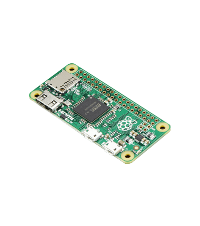

Como se indica en la introducción la Raspberry Pi es un ordenador de placa simple (SBC), desarrollado en Reino Unido y con un objetivo orientado a la enseñanza.
Sus primeros diseños (2006) se basaban en el microcontrolador Atmel ATmega644.
En mayo de 2009 se funda la Fundacionr Raspberry Pi
El primer lote de 10000 placas fue fabricado en Taiwan y en China, no en Reino Unido, debido al ahorro que ello conllevaba y aprovechando este para ser invertido en investigación y desarrollo.
A partir de diciembre de 2015 se puso a la venta la segunda generación de la placa, ya tan famosa, Raspberry Pi 2 con mejores prestaciones (ARM Quad-Core 900 MHz, 1 GB RAM, 4 x USB, HDMI, RJ-45)
En febrero de 2016 salió al mercado la 3 generación de la placa mejorando aun más las prestaciones iniciales y las de su predecesora (ARM Quad-Core 1,2 GHz, 1 GB RAM, 4 x USB, HDMI, RJ-45 y una conectividad inalámbrica integrada de 802.11 b/g/n LAN y Bluetooth).
Entre la 2 y 3 generación nace la Raspberry Zero (26 de noviembre de 2015) con un tamaño reducido (65 mm x 30mm)

Placa Modelo B Raspberry Pi 3